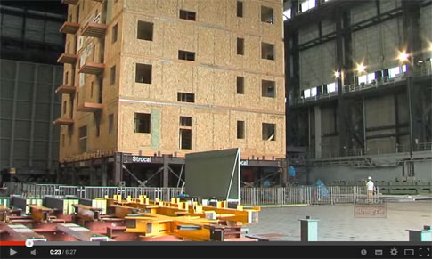
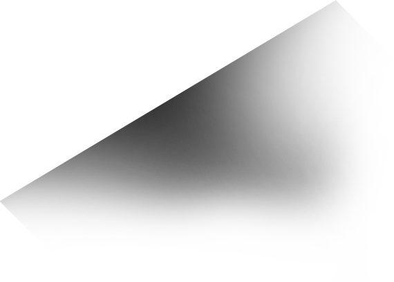

Технология - 80 лет истории.
Панели (SIP) Structural Insulated Panels.
1930
50
60
1970
80
90
20xx
1935
В Лаборатории лесной промышленности (FPL) США (г. Мэдисон, штат Висконсин) впервые
появилась общая концепция конструкционной теплоизолированной панели. Инженеры лаборатории
FPL считали, что фанера или шпон твердых пород дерева может взять на себя часть структурных
нагрузок, действующих на стену. Их прототип конструкционной теплоизолированной панели был
создан с использованием существующей на тот момент фанеры в качестве внешних слоёв «сэндвича»
и теплоизоляционного материала внутри.

1936
Американский архитектор-новатор Фрэнк Ллойд Райт приступил к строительствупервого дома, спроектированного в рамках его концепции U.S.O.N.A. – недорогого «североамериканского» дома для среднего класса. Для уменьшения затрат в качестве конструкционного материала для ряда стен были использованы экспериментальные сэндвич-панели, состоящих из 3-х слоёв клееной фанеры и 2-х слоёв гудронированной бумаги (общая толщина — 57мм). Данный дом был окончательно построен в 1937 году и существует до сих пор, хотя и подвергся частичной реставрации в 1983 году.
1937
В штате Висконсин был построено первое здание с применением в качестве наружных несущих стен
сэндвич-панелей, разработанных FPL. Использование нового строительного материала привлекло
внимание многих, в том числе и тогдашней Первой леди США — Элионоры Рузвельт. В течении
долгих лет это здание эксплуатировалось как один из корпусов Университета Висконсин-Мэдисон
и было разобрано лишь в 1998 году с целью перепланировки территории Университета.
1947
В этот и последующие годы было создано и протестировано большое количество вариаций
сэндвич-панелей, одной из разновидностей которых были панели из фанеры и гофрированного
картона. Одно из тестовых зданий, построенное с применением таких панелей было разобрано
в 1978 году. В целом стены сохранили свои изначальные несущие характеристики, однако в
некоторых наружных стенах «начинка» из гофрированного картона все же частично пришла
в негодность.
1951
Немецкий химический концерн BASF представил свой «революционный утеплитель» —
Styropor (вспененный пенополистирол, известный у нас как ПСБ — Пенополистирол
Суспензионный Беспрессовый).
1952
Еще один американский архитектор, Элден Б. Доу (Alden B. Dow) (бывший учеником Фрэнка Ллойд
Райта в 33 году, а так же сын Греберта Генри Доу, основателя Dow Chemical Company),
будучи приверженцем идей энергоэффективности, проводит свои эксперименты по
созданию конструкционного и теплоизоляционного материала. Результатом стал
«кроманьонец» современных СИП-панелей — «сэндвич» из 2х листов клееной фанеры
и пенополистирола. (Толщина панели Доу составляла те же 57 мм, что и панель Райта,
но в данном случае 40 мм из них приходилось на утеплитель). Дома, построенные из этих
панелей в городе Мидленд, штат Мичиган, считаются первыми домами из СИП, а сам Элден
Б. Доу — первым специалистом по технологии СИП.
1959
Компания Koppers Company переоборудовала завод по производству автомобилей в Детройте в
производственный комплекс по изготовлению СИП-панелей. Метод производства заключался в
задувании предварительно вспененной стироловой пены между двумя слоями клееной фанеры
и последующем склеивании всех слоев. Данная технология позволяла производить панели с
хорошими несущими и теплоизоляционными характеристиками. Однако имела и свои недостатки
— производственный процесс занимал очень много времени. Кроме того Koppers Company
столкнулась с неожиданным сопротивлением профсоюзов плотников северных штатов, которые
опасались, что если дома из СИП будут возводиться так быстро, то они потеряют работу.
Бригады, собиравшие первые дома, специально затягивали процесс возведения дома почти вдвое.
В ту эпоху дешевой энергии и недорогой рабочей силы СИП-панели были неконкурентными на
рынке строительных материалов, поэтому фирма Koppers ушла из строительного бизнеса,
чтобы заниматься холодильными модулями.
1960
Компания Alside Home Program (AHP) внесла ряд изменений в технологию производства панелей,
что позволило сократить процесс с нескольких часов до 20 минут. Однако построив немногим
меньше 100 домов Alside Home Program свернули производство панелей и перепрофилировали
его под отделочные материалы, т.к. посчитали имеющийся спрос на свою продукцию недостаточным.
1965
Архитектурное бюро Woods Constructors (Санта Паула, Калифорния) начало применять СИП-панели
в своих объектах. В течении 20 лет Джон Т. Вудс, Пол Вудс, Джон Д. Вудс и Фредерик Вудс
продвигали технологию СИП в Южной Калифорнии. В апреле 1989 года Вудсы запатентовали
концепцию модульных домов.
1982
На заводе Edison OSB была произведена первая партия ориентированно-стружечной плиты.
Высокие физико-механические характеристики нового материала позволили заменить им
клееную фанеру во многих областях, в том числе и в технологии СИП. Фактически именно в
1982 году технология СИП начала существовать в том виде, в котором мы знаем ее сейчас.
1990
Производителями СИП в США была образована Ассоциация Производителей Конструкционных
Теплоизоляционных Панелей (Structural Insulated Panel Association — SIPA). Данный инструмент
позволил продвинуть технологию и ее применение в строительстве на новый уровень.
111936
7 Американский архитектор-новатор Фрэнк Ллойд Райт приступил к строительствупервого дома, спроектированного в рамках его концепции U.S.O.N.A. – недорогого «североамериканского» дома для среднего класса. Для уменьшения затрат в качестве конструкционного материала для ряда стен были использованы экспериментальные сэндвич-панели, состоящих из 3-х слоёв клееной фанеры и 2-х слоёв гудронированной бумаги (общая толщина — 57мм). Данный дом был окончательно построен в 1937 году и существует до сих пор, хотя и подвергся частичной реставрации в 1983 году.
221936
7 Американский архитектор-новатор Фрэнк Ллойд Райт приступил к строительствупервого дома, спроектированного в рамках его концепции U.S.O.N.A. – недорогого «североамериканского» дома для среднего класса. Для уменьшения затрат в качестве конструкционного материала для ряда стен были использованы экспериментальные сэндвич-панели, состоящих из 3-х слоёв клееной фанеры и 2-х слоёв гудронированной бумаги (общая толщина — 57мм). Данный дом был окончательно построен в 1937 году и существует до сих пор, хотя и подвергся частичной реставрации в 1983 году.
Энергоэффективность технологии.
Выгоднее с каждым годом эксплуатации.
-
 Теплопроводность
Теплопроводность -
 Окупаемость на экономии
Окупаемость на экономии
На прогрев кирпичного дома нужно в 30 раз больше энергии чем для дома из SIP-панелей.
Экстримальные испытания
Смотрите документальный фильм National Geographic Chanel о строительстве суперсооружиния из SIP.
На нашем канале в
Youtube.com/arcticwall
Здания выдерживают от - 50 до + 50 градусов (C).
Надежная стена от стихии.
Панели выдерживают землятресения и новоднения.
Испытание на устойчивость здания
-
2 ТоннГоризонтальИспытания показали, что SIP выдерживает давление в поперечном направлении больше 2 тонн.
-
 Испытание 6-этажного SIP-дома при землетрясении 7.5 баллов7,5 Баллов
-
10 ТоннВертикальНебольшой одноэтажный домик из SIP выдерживает нагрузку 315 тонн, превышающую вес аэробуса Боинг-747 в полтора раза!
Развеять мифы - наш долг.
Популярные заблуждения о SIP-панелях.
-
ГрызуныМыши в естественных условиях не грызут OSB-3. Пенополистирол является несъедобным для грызунов.
-
ПожарSIP панель без отделки, как и любая деревянная конструкция, имеет третью степень огнестойкости К3
-
Не экологичноИз SIP строят образовательные и детские учреждения. Пенополистирол применяется для упаковки пищевых продуктов.
Монтаж дома ArcticWall на вашем участке!
Проектирование. Производство. Строительство.
-
Дома производяться роботами на итальянском оборудовании
-
Материалы и компоненты под конролем лаборотории
-
Доставка и строительство круглый год